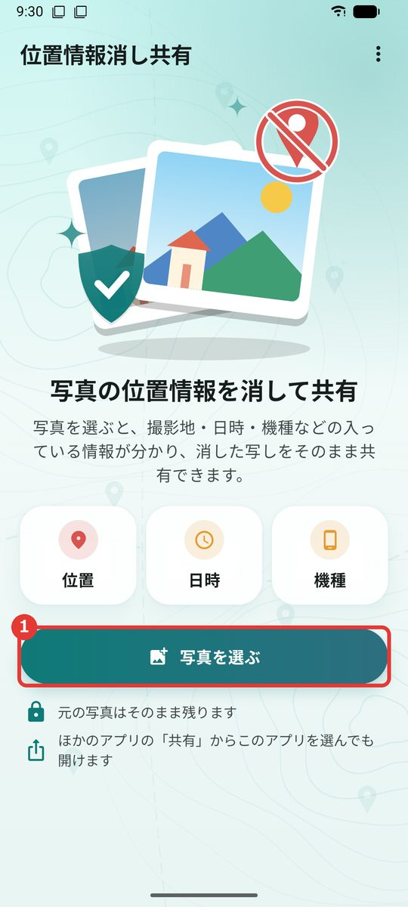
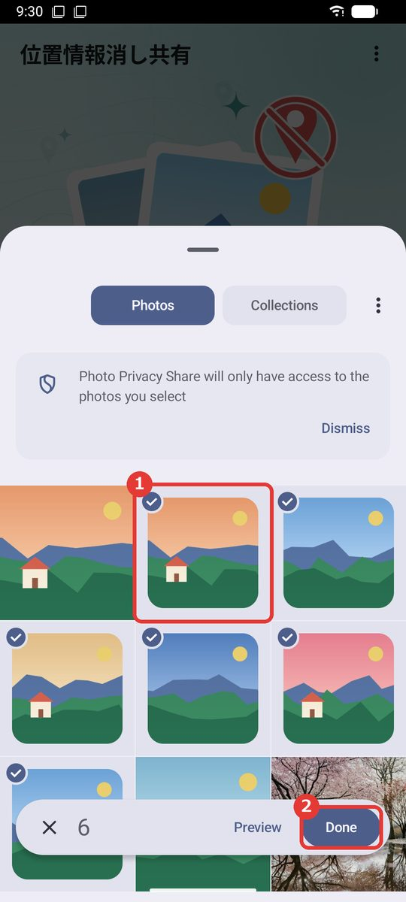
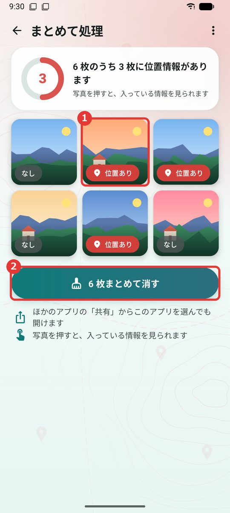
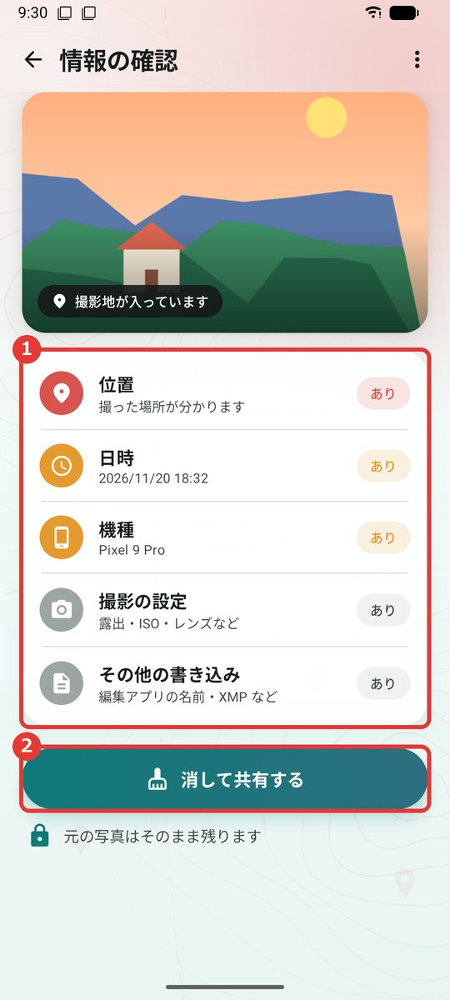
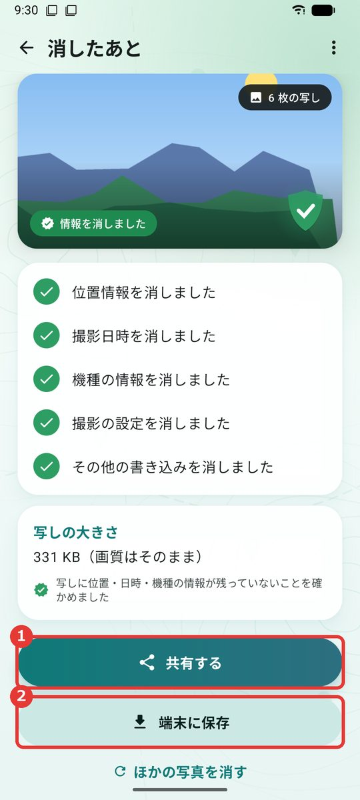
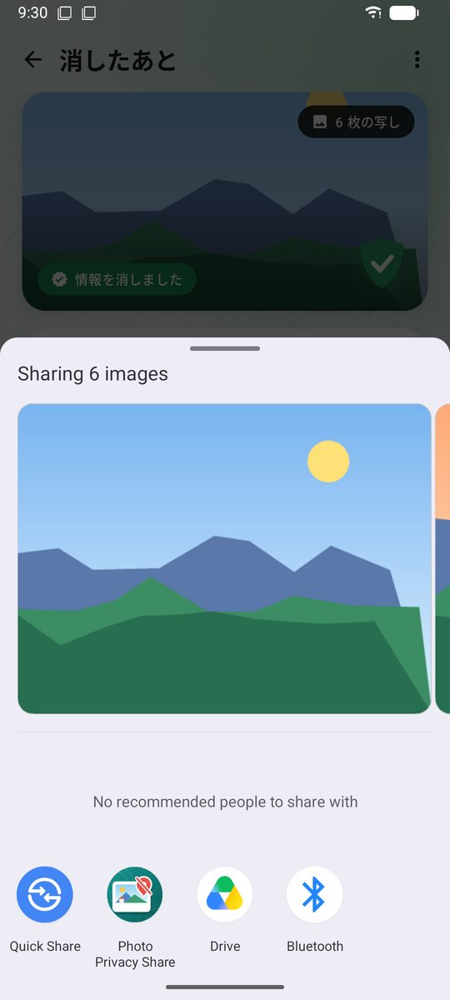
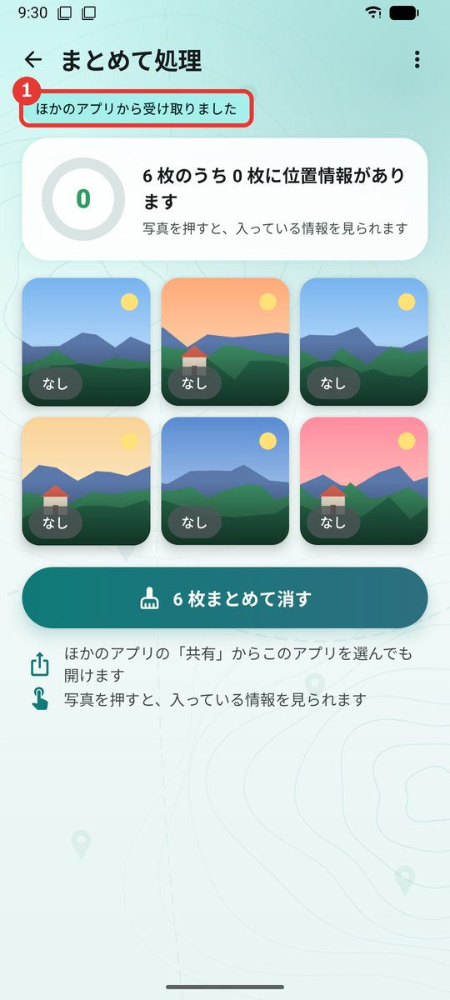
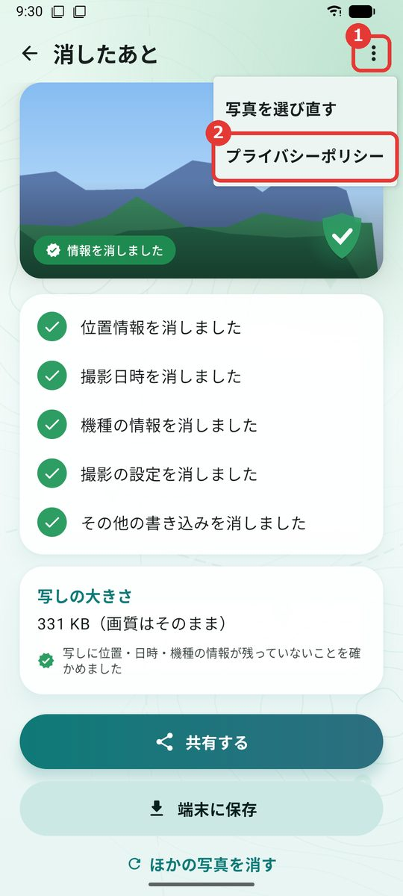

位置情報消し共有 の紹介ページへ戻る ・ DNGG-studio のアプリ一覧
位置情報消し共有（Photo Privacy Share）は、写真に入っている撮影地・日時・機種などの情報を見せ、消した写しを作って共有するアプリです。元の写真は変わりません。
画像の1のような赤い番号は、押すところと、説明の番号です。
この説明は バージョン 0.1.0（お試し版）の画面に合わせています（2026年11月26日）。画面はこれから変わることがあります。画像の写真はすべて見本です。
インストールしたら、そのまま使えます。アカウントの登録や、写真・位置情報の権限の許可は要りません。インターネットにもつながりません。




| 項目 | 中身 | 色 |
|---|---|---|
| 位置 | 撮った場所（緯度・経度）。自宅で撮った写真なら自宅の場所が分かります | 赤 |
| 持ち主・番号 | 持ち主の名前、カメラの製造番号、コメントなど | 赤 |
| 日時 | 撮った日時 | だいだい |
| 機種 | スマホやカメラの機種名 | だいだい |
| 撮影の設定 | 露出・ISO・レンズなど | 灰色 |
| その他の書き込み | 編集アプリの名前、XMP、PNG の文字の情報など | 灰色 |
写真の上の札は「撮影地が入っています」か「撮影地は入っていません」です。何も見つからないときも、念のため写しを作れます。



写真のアプリで写真を見ているときに、そのまま情報を消して送れます。複数枚まとめて共有しても受け取れます。

いいえ。元の写真には書き込みません。情報を消した「写し」を別に作ります。
共有のための写しは、アプリの中の一時的な場所に置き、作ってから 30 分たつと、次にアプリを開いたとき・写真を選んだときに消します。残したいときは「端末に保存」を押してください（Pictures/PhotoPrivacy）。
ありません。アプリはインターネットにつながらず、処理はすべてスマホの中で行います。送るのは、利用者が「共有する」で選んだアプリにだけです。
Android の写真選択は、アプリに渡す写真の位置を伏せることがあります。そのときは位置の情報が入っていることだけを出します。写しからは消えています。
プライバシーポリシーをご覧ください。
DNGG-studio：dngg.studio@gmail.com